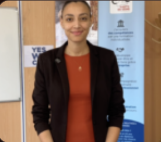
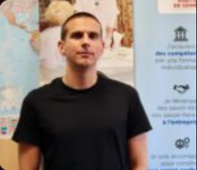
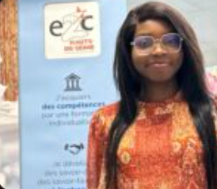
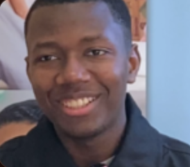

Septembre 2023
Anya, 27 ans
Ancienne stagiaire, elle témoigne avec enthousiasme de son parcours au sein de l’E2C 92.
Découvrez les témoignages de stagiaires ou anciens stagiaires qui ont suivi le parcours E2C pour construire leur projet professionnel et accéder à l’emploi ou à la formation de leur choix.

Ancienne stagiaire, elle témoigne avec enthousiasme de son parcours au sein de l’E2C 92.

Ancien stagiaire, il raconte son passage réussi à l’E2C 92.

Ancienne stagiaire, témoignage vidéo sur son expérience à l’E2C 92.

Ancien stagiaire, témoignage vidéo sur son parcours à l’E2C 92.
« J'ai découvert l'E2C par le biais de la Mission Locale car j'étais en recherche d'un emploi ou d’une formation dans le domaine de la jardinerie sans pour autant être convaincu de ce choix. Une fois pris en charge par cette structure j'ai immédiatement été surpris par l'efficacité de ma référente qui m'a correctement conseillé à des moments où je voulais lâcher par manque de motivation. Du coup j'ai trouvé un domaine professionnel à mon goût qui allie la passion du vélo (je suis moi-même cycliste), la compétence mécanique et la pérennisation de l'emploi. Ce métier ne disparaîtra jamais car il y aura toujours besoin de mécanicien cycle. Du coup j'ai entrepris avec l'aide de ma référente un contrat d'apprentissage à l'INCM de Guyancourt afin de me former sérieusement à ce métier concret et sûr. »
Eric, 22 ans — Oct. 2021 • Ancien stagiaire« Je suis arrivée à l'école de la deuxième chance de Bagneux en avril 2021. J'ai été très bien accueillie par l'équipe de l'école. Ma référente et ses collègues ont tout fait pour m'aider dans mon projet. Ils ont trouvé des solutions pour moi et m'ont accompagnée jusqu'au bout. Je les remercie de tout mon cœur de m'avoir soutenue sans me laisser tomber. Aujourd'hui le 28 septembre 2021 j'ai intégré une formation d'assistante de vie aux familles ou ADVF. »
Angèle, 20 ans — Sept. 2021 • Stagiaire« L'E2C c'est de bons moments, des personnes avec qui je suis encore en contact aujourd'hui et qui sont devenus des amis. Il y a aussi les formateurs qui nous aident tout au long de notre parcours. Aujourd'hui, je travaille, je suis en train de préparer un diplôme et c'est grâce à l'E2C donc je suis vraiment content d'être passé par là ! Il faut accepter chaque opportunité, chaque proposition. »
Abdoullah, 22 ans — Mai 2021 • Ancien stagiaire« Les formateurs sont avec nous ils ne nous lâchent pas ; ils nous aident beaucoup et nous encouragent. De plus, il y a une bonne ambiance à l'école ! Ça vaut le coup ! L'école propose des métiers, te conseille. Ils te focalisent sur un métier puis tu fais un stage. C'est une bonne formation, ça aide beaucoup ! »
Adrien, 20 ans — Mai 2021 • Ancien stagiaire« Sofiane, mon formateur, m'a vraiment beaucoup aidé et encouragée dans ma recherche de projet professionnel, il m'a fait évoluer ! Aujourd'hui, grâce à lui j'ai des compétences en informatique et j'ai amélioré mon français. Il faut écouter les formateurs, il faut s'accrocher et faire des stages. Pour ma part ça m'a apporté de l'expérience et j'ai pu enrichir mon CV ! »
Alhanne, 23 ans — Mai 2021 • Ancienne stagiaire« Je peux enfin exprimer mon sens relationnel et apporter de la gaieté aux personnes âgées ayant vécu elles aussi des moments difficiles pendant le confinement. Grâce à l'E2C 92, je peux dire aujourd'hui que je suis épanoui. »
Tony, 18 ans — Janv. 2021 • Ancien stagiaireLes témoignages publiés sur cette page sont diffusés avec l’accord des personnes concernées. Ils illustrent des parcours individuels et ne se substituent pas aux indicateurs de résultats publiés dans la rubrique “Chiffres clés”.